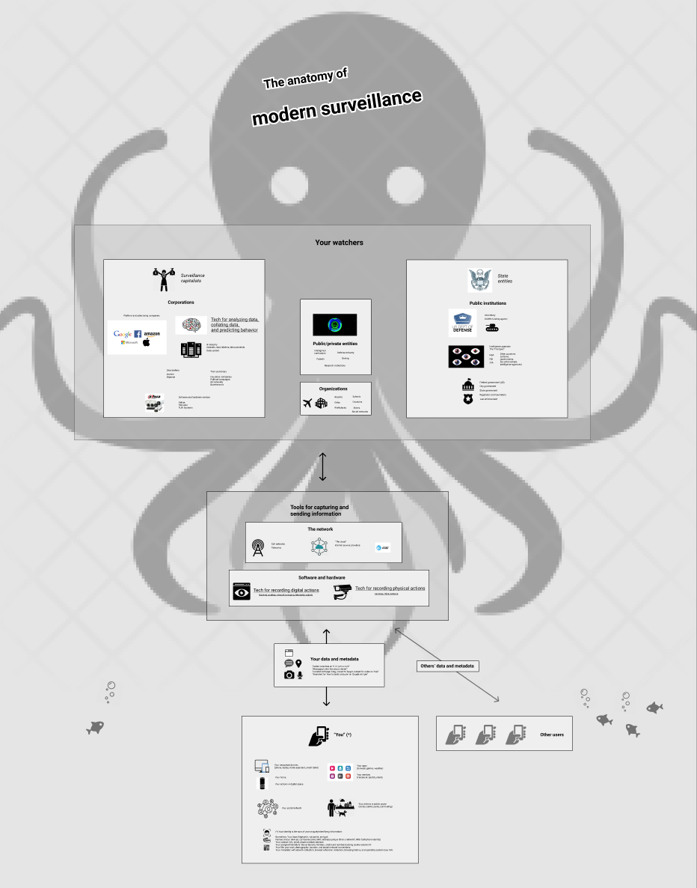

Note: this material is a work in progress.
It’s hard to get a grasp on surveillance and privacy. It’s a huge topic with deep social, historical, and technical dimensions that also impacts our lives from second to second. Governments and companies have incentives to hide how it works. And it changes fast—it seems like some catastrophic new development happens every day. It’s hard to find clear information.
There are many excellent single resources out there for learning about surveillance and privacy--various books, whitepapers, pieces of software, news articles, visualizations, and technical guides. We aim to knit existing resources together into a living toolkit that community members can adapt for their own use. Specifically, we aim to fill the timely need for accessible, comprehensive, experience-focused teaching and learning material for building a high-level and technically-sound understanding of surveillance.
Our goal is that you can use our material to get a group of people from “I’m scared” or “why should I care?” to “I understand why this stuff matters, I understand the context of any new news I see, I know what to do to make things safer for myself, and I know where to look to find further reading on the topics I’m interested in.”
(The name of our work is inspired by A People's Guide to AI.)
This material aims to provide an accessible toolkit for surveillance awareness and action. We hope to take participants from "I'm scared" or "who cares?" to "I feel safer, I understand more, and I know what to do."
The material aims to be short and memorable, so it centers on a question-and-answer approach that incorporates case studies, narratives, illustrations, bullet points, openings for conversation and collaboration, and practical exercises.
The material aims to address participants' pressing personal questions about surveillance as well as contextual questions. Here are the personal questions it addresses:
And here are the contextual questions that provide background for the personal questions:
Finally, here are the key learning objectives:
Imagine you're at a dinner party with friends. Over drinks, you start talking about the news.
Sound familiar? How do you continue the conversation?
Discuss: Solicit candid answers from participants about media narratives of surveillance.
I'm glad we worked together to put together this list. As you know, headlines about surveillance dominate the news. When the conversation comes to surveillance, it's easy to pull out these pithy little soundbites:
Where did these soundbites come from? In most cases, nowhere in particular. But it feels like you hear them repeated everywhere. These ways of thinking are surveillance tropes to watch out for. And these little slogans reinforce the message that we, as a public, feel like surveillance is something that's done to us and that we're powerless to stop. Like crabs in slowly-boiling water, we say these things so we can stop thinking about the water's rising temperature.
Our goal today is to talk about water. Let's work together to build a fresh understanding of surveillance. First, let's talk about the ways that we experience watching.
Opening conversation
Facilitator prompts
Glenn Greenwald gave a powerful defense of privacy in his talk "Why privacy matters."
There is an entire genre of YouTube videos devoted to an experience which I'm certain everyone in this room has had. It entails an individual who, thinking they're alone, engages in some expressive behavior--wild singing, gyrating dancing, some mild sexual activity--only to discover, in fact, that they're not alone, that there is a person watching and lurking, the discovery of which causes them to immediately cease what they were doing in horror. The sense of shame and humiliation in their face is palpable. It's the sense of, 'This is something I'm willing to do only if no one else is watching.
Privacy is the "ability to go somewhere where we can think and reason and interact and speak without the judgmental eyes of others being cast upon us, in which creativity and exploration and dissent exclusively reside. And that is why, when we allow a society to exist where we are subject to constant monitoring, we allow the essence of human freedom to be severely crippled."
Now that we've talked about surveillance and privacy in the abstract, let's get more concrete. Let's talk about how we're actually being surveilled. (The following questionnaire and article are adapted from "SuperVision.")
Are You Under Surveillance? Let’s do a quick check. Do you have any of these?
- a cell phone
- a credit or debit card
- an identification card Do you do any of these?
- use Google, Gmail, or Facebook
- go to school
- have a job
- drive a car If the answer to any of these questions is yes, then you are under surveillance.
When you think surveillance, think smartphone.
To begin rethinking your cell phone from a surveillance perspective, just imagine this (totally fake) news report:
Washington. In legislation signed by the president, the United States government mandated that all citizens carry an electronic device providing live-streamed data on their location, communication activity, and personal interactions. Data banks will constantly record the time, duration, sender, and receiver of all telephone calls and electronic transmissions, while targeted investigations will be able to monitor actual conversations and message content. Cross-analysis of multiparty location records will show patterns of personal interaction and association. The new program also creates what one official called “300 million eyes” by requiring that each of the mandated devices be equipped with an advanced digital camera able to record and document evidence and transmit it to authorities.
Officials from police, national security, and public health and safety agencies heralded the move. In the words of one, “This brings an end to the darkness. We can now better serve our citizens with a universal capacity to know where everyone is, all the time. We’ll know who they’re with, who they talk to, when they move, and where they go. This is a massive improvement in our ability to control disease, crime, and terrorism.” To offset the cost of the program, each citizen will be required to pay a monthly fee.
Let's take this trend to the extreme. If institutions like the state and companies knew everything about us, what would they do with that information? The film "Minority Report" proposed one possible future. Here are three clips from the film:
Discuss
Let's tell some stories about your information and what happens to it. We'll use these stories as a way to make a map of how surveillance works---how all the parts fit together and the ways we can grasp how it works.
Note: The idea is to encourage participants to develop a shared representation of the metaphors we use to understand on surveillance. After each story, discuss what the story is meant to illustrate, what entities to add to the map, and how these entities relate to what's already on the map. Ideally everyone would have a pen and paper, and the facilitator would work on a whiteboard that everyone could see. The goal is to work together to make a map like this one.
First, let's start with some common stories about you---how you volunteer your information and thus make yourself visible to various watchers.
Discuss: Solicit suggestions from participants first.
Note: These stories are picked to be more approachable because they illustrate voluntary surveillance (or self-surveillance) via the consumer-tech entities that most participants should be familiar with. Use the opportunity to introduce a visual grouping for "You" and another one for platform companies (the surveillance capitalists). Also, discuss how "You" become visible to the watchers through your data.
These are all examples of voluntary surveillance: you know what information you're giving out. Now let's discuss some other stories about surveillance---some you might not have experienced, some about surveillance under duress, using information you didn't consent to giving up, using processes opaque to the people caught up in them. They are all real stories or composites of real stories.
Discuss: Solicit suggestions from participants first.
Note: This is an entry point to this whole story that people should have vaguely heard of: "The Data That Turned the World Upside Down: How Cambridge Analytica used your Facebook data to help the Donald Trump campaign in the 2016 election." The point is to introduce a relationship between private entities and public entities, to introduce the idea of public-private collusion, and to introduce the idea of many small pieces of information being used for a much huger emergent purpose (i.e. that of undermining democracy).
Note: This is the famous "Target knows you’re pregnant before your parents do" story. It serves as an entry point to surveillance capitalism and predictive behavior influencing.
Note: This is another pathway to public-private collusion, as well as discussing data storage/longevity issues and issues of scope creep. NYTimes article
Note: This is an entry point to the role of facial recognition and AI in surveillance in the US, how surveillance is targeted at marginalized groups of people, and how personal data is collected coercively to fuel private gain. NBC article
Note: This story reinforces the above story about facial recognition and targeting minorities, adds the nuance that data can move outside state boundaries, and is an entry point to the advanced Chinese surveillance state.
Note: This story introduces another corporate actor, Amazon, as well as personal hardware, and the coercive nature of modern AI. Accidental recording, audio review team
Note: This story is an entry point to ongoing corporate surveillance in physical space and how it ties into advertising and behavioral microtargeting. It also reinforces how much information a smartphone can leak: Bluetooth beacons and MAC address trackers can ping your phone, identifying your location and identity. This story can lead into an exercise about wifi network inspection. Bluetooth tracking, This trash can is stalking you, EFF's Why Metadata Matters
Note: This story is taken straight from the New York Times. It introduces the human element of surveillance: misuse of the state surveillance apparatus---ostensibly for your protection---for a human observer's voyeuristic glee, even in a place that should be secret.
Note: This story is an entry point to state surveillance and starts to introduce some of the technology that we'll visit in the walking tour. It also reinforces the relationship between public and private actors, and introduces two main problems with pervasive surveillance, namely scope creep and data retention.
Note: This story is by necessity a collage of several stories, since we know so little about the inner workings of the NSA and the no-fly list---it's a "matter of national security." Nevertheless, based on the sources below, it seems plausible. This story is an entry point to several broader themes: the policy of the Foreign Intelligence Surveillance Act that the NSA should limit wiretapping to non-US citizens, and its ability to circumvent this policy to spy on US citizens if a foreign national is involved; data fusion; the deep opacity and arbitrary nature of state surveillance and automated decision systems; public-private information sharing; the dragnet nature of surveillance; and the very frustrating and hurtful effects the combination of these factors can have on an individual. It's also a counterpoint to the "nothing to hide, nothing to fear" argument---you have nothing to hide, you would have no problem revealing your list of academic collaborators, and you've done nothing wrong; it's only the "guilt by association" argument that brings the hammer crashing down. We will also see an AT&T peering site on the walking tour. No-fly list predictive assessments, NSA spying on US citizens
We've discussed many stories about our information. We've seen how it can be used to make life more convenient. We've also seen how it can be used in ways we didn't expect---against us, against others, or for other' profit. Now, let's talk about how it all fits together in the map we've made.
Discuss: Talk about the map the partipants made together, as well as visual metaphors for surveillance.
Here is one possible way to map the anatomy of surveillance.

You can find the high-resolution image here.
One metaphor for understanding surveillance is that it's a huge octopus with many arms, with the public being many tiny fish, and your personal data being like air bubbles. The octopus siphons up the data with surveillance infrastructure, both digital and physical, and transmits it over the network to a cast of watchers, including those who watch for profit (the surveillance capitalists), those who watch for law enforcement (the state), and various organizations, quasi-private institutions, and individuals. All the information gathered is pooled, collated, stored, mined for insight, and used to influence and regulate the behavior of the public.
Another metaphor for understanding surveillance is that of the surveillant assemblage. There's no big brother, no single watcher, no one panopticon. Instead, the assemblage flattens an individual into portable data and takes bits of pieces of them into different contexts they never expected. It consists of the "shifting, moving observation presentation, and regulation of the self by countless measures in countless locations." The smartphone is the prime icon of the surveillant assemblage.
Let's get some fresh air and make this real: let's go see some surveillance infrastructure in real life.
Exercise: Conduct the surveillance infrastructure walking tour.
After returning from tour:
Why are things the way they are? Consider a thought experiment. What's something you've always wondered about someone, or a group of people? What if you could read your partner's emails? What if you could read the diary of your worst enemy? What if you could know anything you wanted about a person or a group of people---for example, how many people in the United States are awake at this very moment? How many people in the United States just got off work and are hungry for dinner? If you could know literally anything you wanted, would you want to know, and what would you want to know? Conversely, if you know that others could know literally anything they wanted, how would you want them to be able to know you?
Now you understand the impulse to surveil. We live in an information-seeking society, where government, industry, religion, and social life are all driven by the desire to measure and compare every aspect of life. Everyone wants to know more, and the more you can know, the more you expect to be known and to know.
As "SuperVision" puts it:
Today’s organizations both require and create orderly, systematic knowledge about the people and things they govern or manage. Surveillance is in the DNA of the modern organization. Businesses, governments, universities, even individuals, seek to gather and organize information as an ongoing part of their work. It’s simply part of what we’re expected to do as responsible actors. Think about how many of our contemporary ideologies or value systems celebrate unfettered access to information. Science must have its data. Law must have its witnesses and confessions. Religion has its all-knowing deities. Democracy has its transparency. Rationality must have its perfect information. They all want to know more! This is a unique cultural alignment in which our key value systems unite to push us toward the celebration and advancement of surveillance as a means of social organization and control. In the face of this level of government, corporate, and ideological convergence in favor of advancing surveillance, we are skeptical that the flood can be pushed back. But we might be able to make it a bit more fair, transparent, and accountable.
So, what can we do about surveillance?
First, I would suggest arming yourself against the soundbites we identified in the beginning. The next time someone pulls out that old saw "If you have nothing to hide, nothing to fear" at a party or in a debate, or someone (perhaps a lawmaker, perhaps the CEO of Google, perhaps your best friend) frames surveillance as inevitable, remember some of the many social and civil liberties issues with surveillance:
You can find a great dossier of surveillance technologies and their civil rights issues at the ACLU's They Are Watching page.
To change the state of things, take collective social action: work to raise expectations for the protection of personal data, expect to be able to opt out instead of opt in, keep information in its original context, and fight for transparency in a system. You can spearhead or lead legal efforts, for example to ban facial recognition or regulate surveillance technologies. The EFF has put together a great dossier of countersurveillance success stories.
You can also take concrete technical steps to protect yourself against surveillance, ranging from doing a periodic privacy checkup (just like going to the doctor for a yearly checkup), adopting more secure software and hardware, adopting more private practices, and learning the technical details about how surveillance works. We've included some suggestions in the Exercises section.
Knowledge is power. Stay informed about the uses and abuses of surveillance with the following resources:
Finally: take the time to interrogate your own urge to know, and how it's enabled by the society we live in.
Closing conversation
Note: These are proposed exercises: let us know which ones you find most compelling.
Look at tracking cookies in Chrome. People open their desktop browsers and visit the URL chrome://settings/siteData?search=cookies. They can see the unique identifying strings that websites and ad networks use to track their identity across several site visits. Accompany the exercise with illustrations from How does online tracking actually work?.
Label the dataset of surveillance camera images that you gathered on the walking tour. See A field guide to spotting surveillance cameras for more information.
Discuss
(TODO: write out exercises)
See a dashboard of all the things you are sharing publicly. A ML algorithm (created by us) will display:
Discuss
Same as "In someone else's shoes" but we will display and use their location data, search terms, FB posts shared only to friends, contacts, etc.
You're given an example corpus of data with example search terms. You have a list of things/advertisements to sell. Work together to determine who to target those ads to.
Discuss
Two-part activity
The MAC addresses and corresponding WiFi network names are gathered via custom software (to be built by the sousveillance collective). Participants will work together as a group to match MAC addresses to the real-life person, in a game of Guess Who.
Possible rules of the game:
Important: WiFi network names can contain sensitive data! (Imagine a participant who has connected to “dr_brown_psychiatry” or “seattle_strip_club”). The participant may not even realize that this may be revealed. To prevent this, before the start of the game, ask participants to view the list of networks that their device tries to connect to. They can remove any networks that are sensitive, but encourage them not to remove identifying but unembarrassing networks (e.g., “SFO airport”).
The example data has been gathered:
00:0a:95:9d:68:16 xfinity
00:0a:95:9d:68:16 park94
09:11:55:3d:22:11 AshZResidence
09:11:55:3d:22:11 13th St Starbucks Free WiFi
11:a0:c9:14:c8:29 Amazon-Work
11:a0:c9:14:c8:29 LAX BoingoThe facilitator can give a short introduction to what a MAC address is (link to field guide WiFi surveillance chapter).
The facilitator may start off with some questions:
If the group is stuck, the facilitator can:
If the group unable to identify everyone, that’s okay! The facilitator can talk about other ways to identify someone, such a driving past someone’s house and seeing the same MAC address at that location. They can also discuss how this information can be used to violate people’s privacy, such as location tracking It can also be a good segue into a discussion about location tracking and Acyclica [TODO].
If the group is interested or more advanced technologically, the facilitator can examine packets that are captured [TODO].
Participants join a local network that the facilitator sets up. The group observes the network traffic, e.g. the MAC addresses and packet snippets.
Possibly, with a bigger group, replicate Acyclica